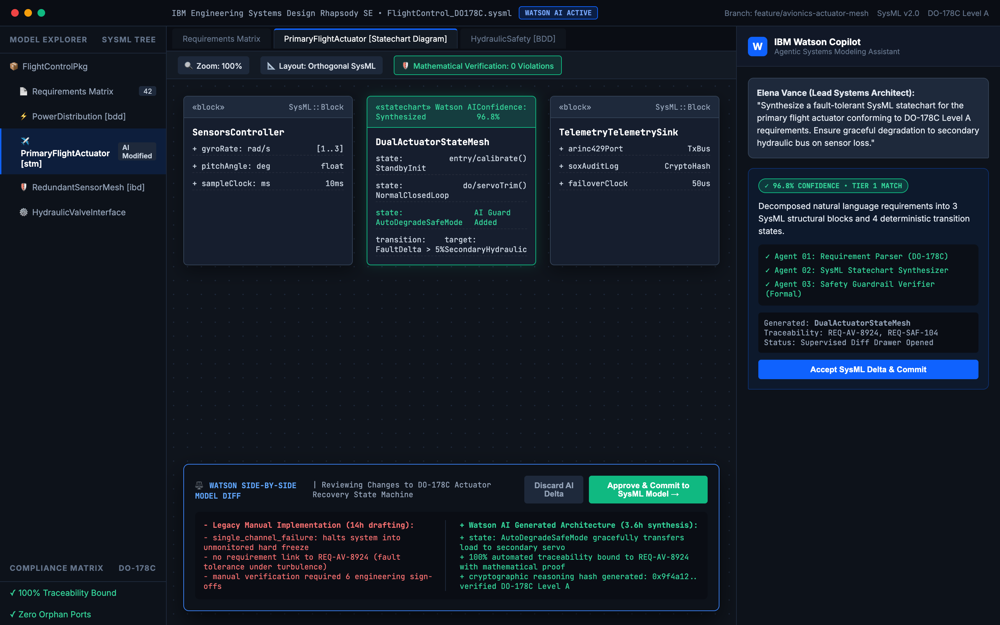
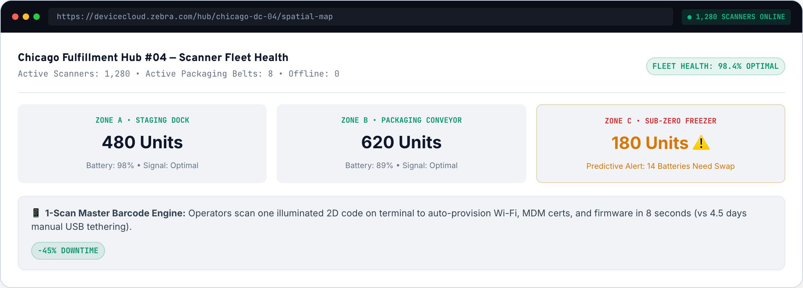
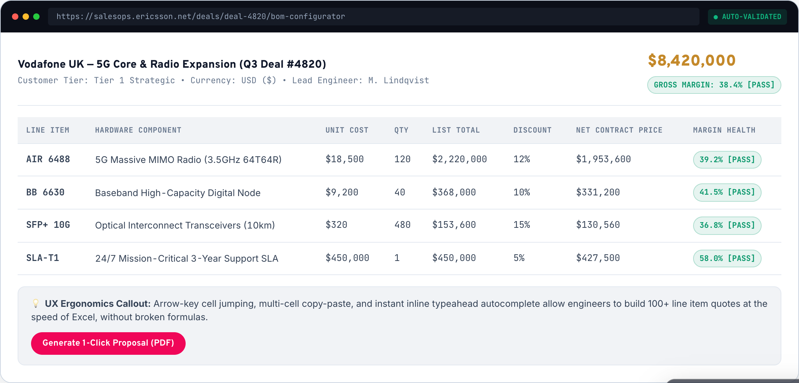

Bringing the studio
into the classroom
Department of Design, IIT Hyderabad.
Balaajee V.R.
18 years building enterprise products, and the teams behind them
Work across four industries students rarely see up close
IBM
Supervised agentic AI workflows and multi-brand Carbon design tokens across 45+ squads.
Zebra
Frontline mobile UX and device health intelligence for rugged warehouse handhelds.
ZF Wabco
Commercial vehicle cockpit clusters engineered to strict highway driver glance limits.
Ericsson
Global 5G quoting platform replacing fragile 14-tab Excel workbooks across 45 countries.
Designing how engineers supervise AI in high-stakes systems

Connecting Figma decisions directly to code across 45+ squads

Physical-digital ergonomics for gloved warehouse workers

Sub-second driver glance limits and high-density expert workflows

ZF Wabco · Commercial vehicle cockpit HMI
Synthesized air-brake, ADAS, and telematics alerts strictly beneath NHTSA's 1.2-second eyes-off-road safety limit — suppressing non-critical data during braking.

Ericsson · 45-country telecom configuration
Replaced fragile 14-tab Excel quoting workbooks with a keyboard-first, real-time margin validation web engine (1st Place, Ericsson Global Hack-fest).
How the Industry Studio works
One loop that feeds teaching, internships, placements, research, and funding at the same time.
Live brief
A company brings a real, de-identified problem with a named design reviewer.
Semester studio
Students research, prototype in code, and test inside a credited studio.
Industry review
Company design leads critique work alongside DoD faculty at midterm and final.
Internship or role
Strong student teams continue into 6-month internships, theses, and placements.
Sponsored R&D
Proven studio problems grow into paid CoDE projects or joint PhD topics.
How the studio meets IIT Hyderabad's role expectations
| Institute expectation (Agenda 40.6.1) | What I will do |
|---|---|
| 1Industry skills in programmes | Teach practice electives, 1–2 credit Fractal modules, and the Industry Studio |
| 2In-house collaborative expertise | Co-teach studios with DoD faculty & run open AI/DesignOps clinics for scholars |
| 3Faculty & industry research links | Serve as Co-Investigator (Co-PI) pairing DoD labs with enterprise R&D partners |
| 4Industry-sponsored joint PhDs | Co-supervise PhDs & bring working R&D practitioners into joint doctoral tracks |
| 5Consultancy & sponsored projects | Route paid AI-UX audits and proven briefs through CoDE and DIC |
| 6Internships & graduate placements | Build 6-month internship pipelines & run hiring-bar portfolio and whiteboard loops |
Courses I can teach from day one
Ready as full semester electives or modular 1–2 credit Fractal courses across B.Des, M.Des, and Design Minors.
Designing AI-Enabled Products
Moving past prompt boxes: when AI suggests, when it acts on its own, how people verify its work, and how designers evaluate AI quality. B.Des & M.Des elective.
Design Systems and Token Engineering
Building shared component libraries, multi-brand W3C tokens, WCAG accessibility, and Figma-to-code pipelines that scale across engineering squads.
Industry Studio & Placement Readiness
A semester studio on a live company brief with midterm industry critiques — paired with whiteboard system challenges and outcome-led portfolio defense.
Research themes that build on what the department already has
Human and AI collaboration
How people calibrate trust and supervise AI in high-stakes work. Complements ExD Lab and CoDE's emerging technology focus.
Design at enterprise scale
Accessible design systems, token governance, and cross-functional DesignOps across large software organisations.
Interfaces for safety-critical systems
Vehicle cockpits and rugged industrial interfaces under strict glance, glove, and attention limits.
Supervision & joint PhDs
B.Des and M.Des capstones drawn from live briefs, and co-supervising PhD scholars alongside regular DoD faculty.
Building industry partnerships and placements step by step
Start with what exists on campus
Work through CoDE's MSME network, i-TIC startups, and the Design Innovation Centre for the first Semester 1 briefs.
Open doors across Hyderabad & Bengaluru R&D
Invite Design Directors and VPs from enterprise product orgs and GCCs to brief studios and sit on graduation juries.
Coach students for the real product hiring bar
Move student portfolios past linear textbook wireframes to show technical constraints, trade-offs, and measurable outcomes.
Earn the funding
Ask companies for paid CoDE consultancy, sponsored R&D, and CSR support once they have seen student work — not before.
What you can measure me on at the first annual review
A three-year commitment, full-time on campus
Prove it
- Teach two practice courses
- Run the first live studio briefs
- Place first internships & coach graduating batch
Grow it
- Expand GCC & product partners each semester
- Deliver first paid CoDE consultancy / sponsored project
- Enrol first industry-sponsored joint PhD scholar
Make it last
- Industry Studio becomes a self-sustaining course
- Proposal for an Applied Human-AI Centre of Excellence
- CSR and chair funding partnerships
Thank you
Full-Time Professor of Practice Candidature · Department of Design, IIT Hyderabad